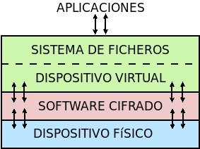
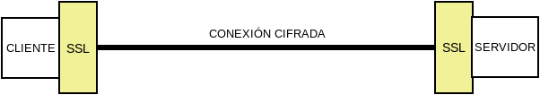
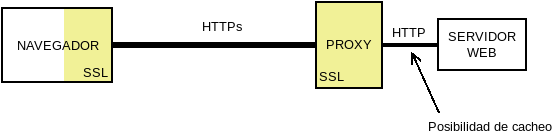
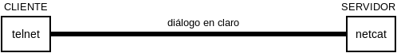

9.1.3. Aplicaciones de la criptografía¶
Hasta este epígrafe se han ilustrado los principios básicos de la criptografía y las órdenes básicas para llevarlos a cabo. A partir de ahora, el tema estará dedicado a exponer aplicaciones prácticas reales de la criptografía en el cifrado, la comprobación de la integridad de los datos o la certificación de la identidad del otro extremo (véanse los objetivos de la criptografía).
Trataremos tres:
La firma digital.
9.1.3.1. Firma digital¶
Una firma digital es al mundo digital lo que la firma manuscrita al papel, la cual certifica la identidad de quien firma y que se está de acuerdo con los términos de lo firmado.
Para llevar a cabo la firma digital de unos datos (un fichero o un mensaje de correo, por ejemplo) se obra del siguiente modo:
Se obtiene un resumen de los datos mediante una función hash.
Se cifra tal resumen con la clave privada del firmante.
Se envían los datos (o se almacena el fichero) junto al resumen cifrado.
Ante esto, un tercero (por ejemplo, el destinatario de un mensaje de correo firmado), es capaz de certificar que el origen es quien dice ser, ya que descifrará el resumen con la clave pública de éste y, por otra parte, podrá comprobar si los datos conservan su integridad gracias al propio resumen descifrado.
Conceptualmente, pues, es bastante sencillo y podemos ilustrar los pasos anteriores haciendo uso de la orden gpg:
$ echo "Este es el contenido del fichero que firmo" > fichero.txt
$ gpg --detach-sign --default-key mi_cuenta@example.com -o fichero.sig fichero.txt
De esta manera tenemos un fichero original (fichero.txt) y su resumen
cifrado digitalmente con nuestra clave privada en fichero.sign. Si
analizamos el fichero de firma:
$ gpg --list-packets fichero.sign
:signature packet: algo 1, keyid 53175AA29C972B7B
version 4, created 1543050622, md5len 0, sigclass 0x00
digest algo 10, begin of digest 04 9e
hashed subpkt 33 len 21 (issuer fpr v4 040968BBC05C39A4DD2A43BD53175AA29C972B7B)
hashed subpkt 2 len 4 (sig created 2018-11-24)
hashed subpkt 28 len 23 (signer's user ID)
subpkt 16 len 8 (issuer key ID 53175AA29C972B7B)
data: [3071 bits]
veremos algunas características de la firma, como:
qué algoritmo de clave simétrica se usó, el 1, que se corresponde con una clave asimétrica RSA, válida tanto para firma como para cifrado. El significado de los códigos puede encontrarse en el RFC 4880, y en concreto en la sección 9.1.
qué clave se usó: la 53175AA29C972B7B, que efectivamente es la nuestra:
$ gpg --keyid-format long -list-keys /home/usuario/.gnupg/pubring.kbx -------------------------------- pub rsa3072/53175AA29C972B7B 2018-11-21 [SC] [expires: 2020-11-20] 040968BBC05C39A4DD2A43BD53175AA29C972B7B uid [ unknown] Soy el que soy <mi_cuenta@example.com> sub rsa3072/4B1F09C9B84F038E 2018-11-21 [E] [expires: 2020-11-20]
con qué algoritmo se resumió el fichero, el 10, que es SHA512 según la sección 9.4 del RFC 4880.
Si hacemos llegar ambos archivos a un tercero, y éste posee nuestra clave pública, podrá verificar nuestra identidad gracias al cifrado de la firma y la integridad del fichero gracias al resumen que contiene esta:
$ gpg --verify fichero.sign fichero.txt
[...]
Primary key fingerprint: 0409 68BB C05C 39A4 DD2A 43BD 5317 5AA2 9C97 2B7B
$ echo $?
0
Todo parece perfecto… pero hay un pequeño problema. ¿Cómo está seguro el tercero de que la clave pública que posee es realmente de quien dice ser y no otro que suplanta su identidad? Para subsanar este último escollo existen los certificados digitales.
Nota
Retenga el adagio de que la clave pública del destinatario se usa para cifrar, y la clave privada del emisor para firmar.
9.1.3.1.1. Certificado digital¶
Nota
Tratamos los certificados digitales de clave pública, por lo que a partir de ahora hablaremos, simplemente, de certificados digitales.
Un certificado digital es un documento firmado digitalmente por una autoridad de certificación que asocia unos datos de identificación con una clave pública. Esto, pues, resuelve el problema de suplantación: sabemos que la clave pública pertenece a quien dice pertenecer, porque un tercero, la autoridad de certificación, en el que tenemos absoluta confianza, lo acredita y ha firmado para ello.
Esquematizando, pues, un certificado digital se compone:
Una pareja de claves.
La identidad del propietario de dichas claves.
La firma digital de una autoridad de certificación sobre la clave pública y los datos identificativos.
Así pues, cuando se firma con un certificado digital el receptor del mensaje puede:
Deducir de la clave pública que permite verificar la firma la identidad del firmante con total seguridad, ya que la clave pública está refrendada (o sea, firmada a su vez) por una autoridad de certificación.
Por supuesto, comprobar la integridad del mensaje gracias al resumen que contiene la firma.
Así todo queda resuelto. Ahora bien, ¿quién es esta autoridad de certificación y por qué es digna de confianza? Una autoridad de certificación (a partir de ahora, CA) es aquella entidad de confianza encargada de emitir (y revocar) certificados digitales. Para llevar a cabo esta tarea la propia CA dispone de un certificado, de manera que con su clave privada firma los certificados que emite. La estructura es jerárquica y el certificado de una CA puede estar avalado por la firma de otro CA de rango superior. Sin embargo, en la cúspide se encuentran las CA raíz, cuyos certificados son autofirmado, lo que significa que nadie certifica digitalmente la identidad de la CA. La garantía de estos certificados viene avalada porque los propios sistemas operativos y navegadores web incorporan los certificados raíz de estas autoridades, que habrán avalado de algún modo su identidad. Por ejemplo, Debian, incluye el paquete ca-certificates, que las contiene.
Un ejemplo de esta jerarquía es el certificado gratuito para servidores web emitido por LetsEncrypt, cuyo certificado a su vez esta firmado por Digital Signature Trust, que sí es una CA raíz:
$ openssl x509 -in cert.pem -text -noout | egrep -E '^\s*(?Issuer|Subject):'
Issuer: O = Digital Signature Trust Co., CN = DST Root CA X3
Subject: C = US, O = Let's Encrypt, CN = Let's Encrypt Authority X3
Sea como sea, las CA generan certificados finales:
Para otra CA subordinada.
Para una persona física.
Para una aplicación de software
Para un servidor.
Los certificados, no obstante, no son eternos: la CA los acredita por un tiempo determinado, por lo que son sólo válidos entre una fecha inicial (normalmente la fecha en que son acreditados) y una fecha final que varía según el tiempo de validez por el que se certifiquen. Ambas fechas se incluyen dentro de los datos identificativos.
Certificados personales
El proceso típico de emisión de un certificado personal es el siguiente:
El interesado realiza una solicitud a la CA, por lo general a través de un servicio web, en que se recogen los datos identificativos y se genera una pareja de claves. Ahora bien, como la identidad del interesado no ha podido verificarse, la CA genera una petición CSR.
El interesado se acerca físicamente a la oficina de una RA (autoridad de registro) a fin de confirmar ante ésta que es quien dice ser.
La RA notifica a la CA tal verificación, con lo que esta pone a disposición del interesado (p.e. a través del servicio web que utilizó primeramente) el certificado solicitado.
El interesado obtiene el certificado y lo instala en su sistema (navegador, cliente de correo, etc).

Nota
En España la autoridad de certificación que usan la inmensa mayoría de las administraciones públicas es la Fábrica Nacional de Moneda y Timbre. Muchas particulares españoles también usan esta autoridad para sus certificados personales, gracias a una extensa red de oficinas de registro (RA) que incluye oficinas de la seguridad social, de la agencia tributaria o ayuntamientos.
Por último, es necesario señalar que, para asegurar la validez de un certificado, no basta sólo con comprobar si el certificado no ha caducado y hacer uso de la firma pública de la CA. Un certificado puede haberse revocado antes de caducar y, en consecuencia, dejar de ser válido antes de tiempo. Por eso, las CA deben ofrecer un servicio para la comprobación de estas revocaciones. Por ejemplo, la FNMT ofrece este servicio de forma gratuita1 mediante el protocolo estándar OSCP descrito en el RFC 6960.
Ver también
Ëchele un ojo a la entrada de este blog donde habla del asunto y se cuenta cómo verificar los certificados emitidos por la FNMT usando openssl.
Certificados de servidor
Estos certificados avalan que una determinada máquina (o conjunto de máquinas, si el servidor es distribuido) tienen un determinado nombre en internet. Así, cuando conectamos a la página oficial de Ministerio de Educación, el certificado de servidor avala que la máquina con la que conectamos es educacionyfp.gob.es. En este caso, existen distintos niveles de acreditación, pero en el más básico es posible que la autoridad teleacredite al servidor. Échele un ojo al procedimiento para obtener certificados mediante el protocolo ACME.
9.1.3.1.2. Correo electrónico¶
La firma digital es muy usada en el correo electrónico, ya que si se firma el conjunto de las cabeceras del mensaje, el cuerpo y los adjuntos, y finalmente esa firma se adhiere al propio mensaje como adjunto adicional, el destinatario puede tener seguridad al recibir un mensaje de que éste fue escrito por quien dice y que no ha sido modificado por el camino.
Lo habitual, no obstante, es que no se usen certificados digitales, sino claves PGP un estándar desarrollado para el cifrado y firma de mensajes de correos electrónicos, cuya generación, importación y exportación de claves se practicamos al tratar el cifrado asimétrico. Obviamente, el proceso de firma de un mensaje no exige la elaboración artesanal de la firma, sino que los clientes de correo como mutt o Thunderbird suelen incorporar esa funcionalidad para que el proceso sea muy sencillo.
Nota
También es posible firmar y cifrar mensajes con determinados servicios de webmail y la extensión adecuada del navegador. Por ejemplo, en Chrome existe la extensión Mailenvelope que permite el cifrado de mensajes para los principales sitios de webmail (Gmail, Yahoo, Outlook, etc.).
Ver también
Para ver cómo firmar mensajes de correo en mutt con el certificado de la FNMT, puede consultar este epígrafe.
9.1.3.2. Cifrado de discos¶
Aunque ya hemos ilustrado cómo cifrar un fichero individual, este procedimiento sólo es útil si se quiere portar un fichero y es absolutamente impracticable si lo que se pretende es almacenar ficheros en disco, ya que exige cada vez que se quiera realizar la modificación del contenido, un descifrado y un cifrado manual. En la práctica, lo que se hace es cifrar la totalidad o parte de un sistema de ficheros a fin de que todo lo incluido en esa zona este cifrado y no ser leído (o escrito) a menos que se conozca la contraseña. Para ponerlo en práctica hay tres estrategias.
El cifrado de dispositivos de bloques completos (p.e. una partición), que usa LUKS.
El cifrado del contenido de un directorio arbitrario, que, junto a FUSE, es la aproximación que usa software como:
encfs, que ha sido el software más usado, pero que es actualmente desaconsejable por sus problemas de seguridad.
cryfs, que tiene la limitación de no permitir aún el cambio en la contraseña de cifrado.
gocryptfs, que será el que utilicemos por no tener la limitación anterior.
Usar las capacidades de cifrado del propio sistema de ficheros, si el que usamos las tiene. En el caso de ext4, éste soporta cifrado desde la versión 4.1 del kernel de linux.
9.1.3.2.1. Cifrado de bloques (LUKS)¶
Mediante esta técnica el software hace de intermediario entre los bloques físicos y los bloques de un dispositivo virtual cifrando en las escrituras y descifrando en las lecturas.
En consecuencia:
Ciframos un dispositivo de bloques entero.
Como el cifrado es independiente del sistema de ficheros, se puede utilizar cualquier sistema de ficheros.
Permite no sólo el cifrado de datos, sino el cifrado del sistema entero, preparando convenientemente el sistema (caso que no abordaremos aquí, pero que puede consultarse, por ejemplo, en un artículo de la wiki de Archlinux).
Abordaremos el caso más sencillo de querer cifrar una partición física, para lo cual debemos primero instalar el software de cifrado:
# apt install cryptsetup
Operativa manual
Lo primero es mapear una partición física2 (p.e. /dev/sda6) sobre
un dispositivo virtual:
# cryptsetup -y -v luksFormat /dev/sda6 # Requerirá una contraseña
# cryptsetup open /dev/sda6 cifrado # Debemos proporcionar la contraseña
Esto generará el dispositivo virtual de bloques /dev/mapper/cifrado,
sobre el cual podemos actuar como si se tratara de un dispositivo físico, o
sea:
# mkfs.ext4 -L DATOSECRETOS /dev/mapper/cirado
# mount /dev/mapper/cifrado /mnt
Si en algún momento quisiéramos desmontar todo:
# umount /mnt
# cryptsetup close cifrado
Operativa automatizada
Que le administrador deba llevar a cabo estas operaciones cada vez que se arranca
el sistema, no es algo operativo. Para semiautomatizar el montaje durante el
arranque podemos añadir la asociación entre el dispositivo físico y el virtual
en /etc/crypttab:
# echo "cifrado /dev/sda6 none" >> /etc/crypttab
y la asociación entre el dispositivo virtual y el punto de montaje en
/etc/fstab:
# echo "/dev/mapper/cifrado /mnt ext4 defaults 0 0" >> /etc/fstab
El montaje será semiautomático, porque durante el proceso de arranque deberemos digitalizar la contraseña. Es posible, también, en vez de que la clave sea interactiva, guardarla en un fichero. Es más, LUKS dispone de ocho slots para almacenar claves alternativas. Ahora mismo sólo habría una:
# cryptsetup luksDump /dev/sda6
LUKS header information
Version: 2
Epoch: 8
Metadata area: 16384 [bytes]
Keyslots area: 16744448 [bytes]
UUID: e26d3cf8-20a7-422f-ac8f-83340e63725f
Label: (no label)
Subsystem: (no subsystem)
Flags: (no flags)
Data segments:
0: crypt
offset: 16777216 [bytes]
length: (whole device)
cipher: aes-xts-plain64
sector: 512 [bytes]
Keyslots:
0: luks2
Key: 512 bits
Priority: normal
Cipher: aes-xts-plain64
Cipher key: 512 bits
PBKDF: argon2i
Time cost: 4
Memory: 98948
Threads: 1
Salt: a0 a1 57 4c 30 6a af e5 de 76 d5 d8 a9 f0 11 b7
ac b5 c6 90 d0 1d 4e 92 4d 1c 4b b5 4c 07 97 70
AF stripes: 4000
AF hash: sha256
Area offset:32768 [bytes]
Area length:58048 [bytes]
Digest ID: 0
Tokens:
Digests:
0: pbkdf2
Hash: sha256
Iterations: 39337
Salt: 2b c9 51 10 c7 29 4b 63 35 a4 83 63 bc 36 46 2f
49 92 af dd 32 a8 7c 9d 19 08 51 80 1b 58 6f 56
Digest: 0c 52 b0 1d 8c 80 2e 6b 45 0a c8 ac 4a b2 e9 a2
f4 bf 81 e6 5a 00 c4 42 af 10 21 9c 3a 92 fe 6c
con lo que podemos añadir al mismo sistema otra clave que esté en un fichero. Para ello, vamos primero a generar esa clave, constituida por 512 bytes totalmente aleatorios:
# dd < /dev/urandom > /root/luks.key bs=512 count=1
que, podemos consultar en formato hexadecimal, así:
# od -v -An -tx1 /root/luks.key # Consultamos la clave
dc 12 ae d8 2c b5 4e 12 56 a9 35 b4 5f a6 29 b9
[...]
Con la clave ya en el fichero /root/luks.key, podemos añadirla a un
slot:
# cryptsetup luksAddKey /dev/sda6 /root/luks.key
# cryptsetup luksDump /dev/sda6
[...]
Keyslots:
0: luks2
Key: 512 bits
Priority: normal
Cipher: aes-xts-plain64
Cipher key: 512 bits
PBKDF: argon2i
Time cost: 4
Memory: 98948
Threads: 1
Salt: a0 a1 57 4c 30 6a af e5 de 76 d5 d8 a9 f0 11 b7
ac b5 c6 90 d0 1d 4e 92 4d 1c 4b b5 4c 07 97 70
AF stripes: 4000
AF hash: sha256
Area offset:32768 [bytes]
Area length:258048 [bytes]
Digest ID: 0
1: luks2
Key: 512 bits
Priority: normal
Cipher: aes-xts-plain64
Cipher key: 512 bits
PBKDF: argon2i
Time cost: 4
Memory: 100952
Threads: 1
Salt: b1 63 a9 24 aa cc f5 9c b4 6c 8a 8b 27 7a cb 2c
72 cd f8 d9 68 b9 1b f4 43 c7 d6 b5 20 81 47 c5
AF stripes: 4000
AF hash: sha256
Area offset:290816 [bytes]
Area length:258048 [bytes]
Digest ID: 0
[...]
Por último, si en /etc/crypttab modificamos la línea para que se use el
fichero:
cifrado /dev/sda6 /root/luks.key
durante el arranque no se pedirá ninguna clave y el sistema se encontrará montado al acabar la secuencia.
Advertencia
Ahora bien, ¿para qué ciframos una partición si dejamos la clave para su descifrado en un fichero de otra partición sin cifrar?
Lo interesante de lo anterior es, simplemente, comprobar que se puede guardar la clave en un fichero y usarlo para no tener que escribirla interactivamente. Y ello es útil, si almacenamos el fichero en un dispositivo externo como un pincho USB que procuremos retirar y llevarnos lejos de la máquina cuando no la usemos. Además, es conveniente ocultar ese fichero para que pase desapercibido si alguien se hace con nuestro pincho. A este respecto, lo más juicioso es guardar las 512 bytes de la clave en algún espacio libre del pincho USB y ajeno a los sistemas de ficheros que pueda haber en él:
Si el particionado es DOS, podemos utilizar los últimos 512 bytes del espacio entre el MBR y la primera partición, ya que al principio de ese espacio puede haber código de un gestor de arranque como GRUB.
Si el particionado es GPT, podemos utilizar los últimos 512 bytes del espacio que se reserva para definir particiones, ya que es bastante improbable que en el pincho hayamos creado más de 124 particiones.
Pongamos este segundo caso de ejemplo. En un disco GPT:
El primer sector es un MBR ficticio (512B)
El segundo sector es la cabecera GPT (512B)
A continuación hay espacio para 128 definiciones de particiones cada una de las cuales ocupa 128 bytes (16KiB).
En consecuencia el comienzo del disco ocupa 17KiB o lo que es lo mismo 34 sectores, así que podemos ocupar el sector 34 para almacenar nuestra clave, con el único costo de que "sólo" podremos definir 124 particiones, lo cual, ciertamente, no parece ningún problema.
Supongamos que el pincho se encuentra en /dev/sdb3:
# gdisk -l /dev/sdb
[...]
Number Start (sector) End (sector) Size Code Name
1 416 103003 50.1 MiB EF00 EFI System Partition
2 103008 30719966 14.6 GiB 0700 Microsoft basic data
Vamos a crear una clave aleatoria de 512 bytes directamente sobre su sector 34:
# dd < /dev/urandom > /dev/sdb bs=512 count=1 seek=33
y, creada, la añadimos a un slot:
# { echo "secreto" ; dd < /dev/sdb bs=512 count=1 skip=33; } | cryptsetup luksAddKey /dev/sda6 -
donde «secreto» es la contraseña que introdujimos al crear el dispositivo cifrado y que nos servía para hacer el montaje interactivo. Añadida esta clave, podemos probar si funciona del siguiente modo:
# dd < /dev/sdb bs=512 count=1 skip=33 | cryptsetup open /dev/sda6 cifrado --key-file=-
que debe generar el dispositivo virtual y, si continua la línea en
/etc/fstab. montarnos directamente la partición sobre /srv. Ya
tenemos la mitad del trabajo hecho, ya que aún falta que al arrancar el sistema
busque el dispositivo, lo monte y lleve a cabo justamente esta operación.
Para ello, debemos crear una regla para udev, que al detectar el dispositivo USB lance un script:
# cat > /etc/udev/rules.d/70-usb.rules
SUBSYSTEMS=="usb", ACTION=="add", ATTRS{idVendor}=="abcd", ATTRS{idProduct}=="1234", \
KERNEL=="sd?", SYMLINK+="usbkey", RUN+="/usr/local/bin/unlock.sh"
La regla, identifica el dispositivo en el que hemos guardado la clave a través de su idVendor e idProduct que se pueden consultar fácilmente al hacer:
$ lsusb
[...]
Bus 002 Device 002: ID abcd:1234 Unknown
[...]
Además, aprovechamos la regla para añadir un enlace simbólico /dev/usbkey que apunte
al dispositivo. Con este nombre podremos referirnos al dispositivo dentro del script:
#!/bin/sh
RT="/dev/sda6"
DEVICE="/dev/usbkey"
ENCVOL="cifrado"
MOUNTP="/srv"
{
until [ -b "$PART" ]; do sleep .5; done
dd < "$DEVICE" bs=512 count=1 skip=33 | \
cryptsetup open "$PART" "$ENCVOL" --key-file=-
} &
Por último, en /etc/crypttab no debe existir referencia alguna, ya
que es el script el que realiza la operación de crear el dispositivo cifrado.
En /etc/fstab, sí podemos dejar la línea, pero añadiendo la opción
nofail, para que no falle el montaje y pare el arranque en caso de que no se
encuentre el pincho:
/dev/mapper/cifrado /srv ext4 defaults,nofail 0 0
Nota
Esta estrategia está tomada de esta entrada de /dev/blog y sólo es válida si se cifra una partición de datos y no la partición del sistema. Si se lleva a cabo el cifrado del sistema, es necesario recurrir a otra estrategia totalmente distinta basada en manipular la imagen initramfs.
9.1.3.2.2. Cifrado de directorio (gocrypts)¶
Esta estrategia permite cifrar un directorio entero, de modo que todo sobre lo que trabajemos dentro de él se almacenará cifrado de forma transparente. Se basa en el uso de un software intermedio que, antes de almacenar datos en el sistema de ficheros o tras leerlos de él, cifra o descifra la información.

En consecuencia:
Cifrados sobre el sistema de ficheros existen un directorio.
El cifrado es también independiente del sistema de ficheros.
Sólo nos permite cifrar datos, no el sistema completo.
Todo el software con este segundo enfoque se utiliza básicamente del mismo modo, de modo que pueden identificarse las siguientes operaciones básicas:
La creación del directorio cifrado, que exigirá el establecimiento de la clave simétrica de cifrado.
El montaje de dicho directorio introduciendo la clave; y el desmontaje.
El cambio de la clave.
Lo ilustraremos mediante gocryptfs, para cuya instalación debemos hacer:
# apt install gocryptfs fuse
Operativa manual
Es sumamente sencilla. Suponiendo que el directorio cifrado sea
~/cipher, podemos crearlo con:
$ gocryptfs -init ~/cipher
que nos pedirá interactivamente la contraseña (la clave simétrica) con que se cifrarán los datos. Con ella podremos realizar el montaje del siguiente modo:
$ gocryptfs ~/cipher ~/plain
lo cual mostrará dentro de ~/plain los contenidos descifrados, después de
que facilitemos la clave. De esta forma, el usuario podrá trabajar de forma
transparente sobre ~/plain, mientras el software se encarga de almacenar
los datos cifrados dentro de ~/cipher. Al acabarse el trabajo, puede
desmontarse el directorio:
$ fusermount -u ~/plain
Puede, además, modificarse la clave simétrica de cifrado (incluso cuando el directorio está montado):
$ gocryptfs -passwd ~/cipher
Operativa automatizada
Lo óptimo y cómodo, cuando se desea que los usuarios tengan la posibilidad de tener un directorio cifrado, es que las operaciones se hagan de modo automático, de manera que al acceder al sistema el usuario tenga montado el directorio que da acceso a los datos sin cifrar y que al dejarlo, se produzca el desmontaje. Para lograrlo puede plantearse la siguiente estrategia:
En la medida en que el usuario no opera sobre el directorio cifrado, se lo ocultaremos anteponiendo a su nombre un punto. Por tanto, en vez de llamarlo
~/cipherlo llamaremos, por ejemplo,~/.Cifrado. Al directorio que muestra los datos en claro, le daremos el mismo nombre pero sin anteponer el punto (~/Cifrado).Haremos que la clave de cifrado coincida con la contraseña de usuario, lo cual propicia que durante el proceso de autenticación con PAM podamos usar la contraseña introducida para montar automáticamente el directorio.
Establecido esto, basta con escribir un script que se encargue de hacer estas
operaciones, cuyo código se enlaza y dejarlo en
/usr/local/bin/mgocryptfs:
# mv /patH/donde/este/mgocryptfs /usr/local/bin
# chmod +x /usr/local/bin/mgocryptfs
y preparar PAM para que se ejecute al abrir y cerrar sesión en el sistema. La
forma más limpia de hacerlo es creando un plugin de configuración
como éste que puede habilitarse del siguiente modo:
# mv /path/donde/este/pam-gocryptfs /usr/share/pam-configs
# pam-auth-update
El script, además, incluye un aspecto accesorio más: sólo afecta a los usuarios que pertenezcan al grupo crypto, de modo que si queremos que un usuario monte automáticamente un directorio para guardar cifrados los datos, necesitaremos antes haberlo incluido en este directorio.
Por último, está el problema del cambio de contraseña. Tal y como está
configurado por defecto, cuando un usuario del grupo crypto accede al sistema
y no tiene directorio de cifrado, éste se crea utilizando la contraseña de
acceso. En consecuencia, contraseña y clave de cifrado coinciden y todo
funciona correctamente. Ahora bien, si se nos antoja cambiar nuestra
contraseña, la clave de cifrado seguirá siendo la antigua, por lo que para que
el montaje automático continúe funcionado, también deberemos cambiar la clave
de forma separada. Para ello podemos crear un script que haga de envoltorio a
la orden que usemos para cambiar la contraseña. Por ejemplo, si es passwd, una posible solución (no demasiado elegante, todo sea dicho) es
ésta.
9.1.3.2.3. Cifrado de directorio (con ext4)¶
Desde la versión 4.1 del kernel de Linux, ext4 soporta el cifrado transparente, así que podemos utilizar lsa capacidades del propio sistema de ficheros para cifrar de forma transparente uno o alguno de sus directorios.
En consecuencia:
Es el propio sistema de ficheros el que se encarga del cifrado, lo que mejora el rendimiento respecto a la solución anterior.
El sistema de ficheros debe ser forzosamente ext4. Otros sistemas de ficheros también pueden soportar cifrado, pero en ese caso, tendremos que estudiar cómo se cifra con ellos.
Como el anterior, es un método apropiado para cifrar datos de usuario.
Antes de empezar es necesario:
Comprobar que el tamaño de página que usa el sistema y el tamaño de bloque del sistema de archivos son iguales4:
# getconf PAGE_SIZE 4096 # tune2fs -l /dev/sda5 | awk '$0 ~ /^Block size:/ {print $NF}' 4096
Nota
Suponemos que el sistema de archivos en el que queremos cifrar algunos directorios es
/homey que éste se encuentra sobre la partición/dev/sda5Habilitar el cifrado para el sistema de archivos:
# tune2fs -l /dev/sda5 | grep -q crypt && echo "Habilitado" # tune2fs -O encrypt /dev/sda5 # tune2fs -l /dev/sda5 | grep -q crypt && echo "Habilitado" Habilitado
Instalar el software adecuado:
# apt install fscrypt libpam-fscryptEn puridad sólo necesitamos el primer paquete, pero el segundo permite desbloquear de forma transparente los directorios cifrados al autenticarse el usuario en el sistema.
Preparación
Antes de cifrar cualquier directorio es necesario crear las estructuras necesarias:
# fscrypt setup
# fscrypt setup /
# fscrypt setup /home
La primera orden crea la configuración /etc/fscrypt.conf, la segunda es
necesaria si se quiere usar la contraseña del propio usuario como clave para el
cifrado; y la tercera se requiere para poder usar otro tipo de claves para el
cifrado.
Operativa
Para cifrar un directorio basta con que el usuario haga:
$ mkdir ~/privado
$ fscrypt encrypt ~/privado --source=pam_passphrase
que usará como clave su propia contraseña de usuario. Además, de preparar el directorio para que se almacenen los datos cifrados, lo desbloquea, lo que significa que podremos escribir y leer dentro de él de forma transparente, aunque lo datos se guarden cifrados:
$ fscrypt status ~/privado
"/home/usuario/privado/" is encrypted with fscrypt.
Policy: 822664193b8152b4
Unlocked: Yes
Protected with 1 protector:
PROTECTOR LINKED DESCRIPTION
1095888ae485002d Yes (/) login protector for usuario
La ventaja de usar la contraseña de usuario es doble:
Al autenticarse en el sistema, todos los directorios cifrados con la contraseña de usuario, se desbloquearán automáticamente.
Al modificar la contraseña de usuario, cambiará solidariamente la clave de cifrado de todos esos directorios.
También puede usarse una clave distinta a la de usuario:
$ mkdir ~/secreto
$ fscrypt encrypt ~/secreto --source=custom_passphrase
$ fscrypt status ~/secreto
"/home/usuario/secreto/" is encrypted with fscrypt.
Policy: 2aca13a317cf9195
Unlocked: Yes
Protected with 1 protector:
PROTECTOR LINKED DESCRIPTION
9572560fc543c9b5 No custom protector "1234"
En este caso se ha usado una frase personalizada de nombre «1234». En futuros reinicios, el directorio estará bloqueadado y habrá que desbloquearlo explícitamente proporcionando la contraseña:
$ fscrypt unlock ~/secreto
Por otro lado, si se quiere cambiar la contraseña, habrá que ejecutar lo siguiente:
$ fscrypt metadata change-passphrase --protector=/home:9572560fc543c9b5
Cifrado del propio directorio de usuario
Un caso muy socorrido es cifrar el directorio personal del usuario con la clave del propio usuario. Esta tarea debe llevarla a cabo el administrador y es conveniente que se lleve a cabo en el proceso de de alta del usuario. En cualquier caso, puede obrarse del siguiente modo:
# mkdir /home/usuario.new
# chown usuario:usuario /home/usuario.new
# fscrypt encrypt /home/usuario.new --user=usuario
# cp -aT /home/usuario /home/usuario.new
# rm -rf /home/usuario
# mv /home/usuario.new /home/usuario
El tercer paso exige que el administrador proporcione la contraseña del usuario, o sea, que la conozca. Esto en realidad no es problema, porque después de la operación, el usuario podrá modificar la contraseña. El quinto paso, en puridad, requeriría el uso de una herramienta como shred para eliminar todo rastro de los ficheros sin cifrar.
Nota
Lo lógico si se desea que los usuarios tengan cifrado su directorio es crear un script para que el alta incluya el cifrado de tal directorio.
9.1.3.3. Protocolos seguros de red¶
Para la comunicación entre extremos se han desarrollado protocolos que cifran la comunicación. y, por lo general, usan cifrado híbrido. Los más habituales son:
9.1.3.3.1. SSH¶
Surgió como reemplazo al protocolo telnet que se usaba para la administración remota de servidores. Sin embargo, no se limita a esto y es capaz de ofrecer otros servicios seguros como la transferencia de ficheros o la tunelización de otras comunicaciones (funcionalidad esta análoga a la que ofrece SSL).
Ver también
Hay todo un epígrafe dedicado a la configuración de un servicio SSH.
9.1.3.3.2. VPN¶
No es propiamente un protocolo, sino una red privada virtual, esto es una tecnología de comunicación entre redes de ordenadores que permite, a través de una red pública (internet), la conexión segura punto a punto entre dos redes locales de ordenadores. Esta conexión puede ser efectuada en capa 3, en cuyo caso las dos redes extremas serán redes distintas; o en capa 2, en cuyo caso el enlace conectará las dos redes extremas como dos segmentos de una misma red.
Para establecer una VPN no hay un único protocolo, sino toda pléyade de protocolos que se pueden agrupar en tres familias: el obsoleto PPTP, las que usan IPSec, los que usan SSL y otros que se basan en Noise.
Ver también
Hay un extenso epígrade dedicado a este tipo de protocolos.
9.1.3.3.3. SSL/TLS¶
En realidad son el mismo protocolo, ya que TLS es el sucesor de SSL, aunque es común que se le siga denominando SSL. Básicamente es un protocolo que permite encapsular de modo seguro otro protocolo de red. Surgió en 1994 para encapsular el protocolo HTTP (y crear HTTPs) en los navegadores Netscape.
SSL es independiente del protocolo no seguro que cifre y, simplemente, establece un encapsulamiento cifrado bajo el cual circula el protocolo plano sin modificaciones. Su funcionamiento básicamente es el siguiente:
Los extremos establecen la conexión segura intercambiando las claves según lo explicado en el cifrado híbrido, de manera que cuando la clave simétrica se encuentra en ambos extremos, el túnel está listo para funcionar.
En el cliente, la comunicación en el protocolo arbitrario se cifra gracias a SSL y se envía al servidor donde el protocolo SSL se encarga de descifrar y entregar la comunicación en claro al servidor.
La respuesta del servidor se cifra, se envía a través de la red, y al llegar al cliente, se descifra y se entrega al cliente.
Podemos pues considerar al protocolo SSL como un mero intérprete que se encarga de cifrar la comunicación al salir y descifrarla al entrar.
Por tanto, servidor y cliente siguen comunicándose a través del mismo protocolo en claro. Lo que suele ocurrir, no obstante, es que ambos, servidor y cliente, lleven incorporada la capacidad de cifrar con SSL. Por ejemplo, en una comunicación HTTPs, que no es más que HTTP sobre SSL, se comunican directamente navegador con servidor web, porque son ellos dos mismos lo que también cifran y descifran. Sin embargo, esto no tiene por qué ser así. Es bastante común el siguiente esquema:
en el que no es el servidor web el que cifra usando el protocolo SSL, sino un proxy web intermedio. Este proxy web inverso, se encuentra en la misma máquina que el servidor o en una máquina de la misma red, por lo que no se compromete la seguridad y facilita que se pueda colocar entre él y el servidor web, un proxy de cacheo como varnish que, con una buena política, permite agilizar el servicio de páginas dinámicas.
Al basarse en SSL en cifrado híbrido es necesario que el servidor disponga de certificado digital para que se pueda realizar el cifrado asimétrico que permite el intercambio de la clave de sesión y que, además, el cliente pueda confirmar que un tercero no suplanta al servidor.
Ver también
Consulte cómo obtener un certificado de servidor válido con Let’s Encrypt.
9.1.3.3.3.1. SNI¶
Al cifrar TLS por completo el protocolo subyacente, es preciso que opere el certificado antes de poder acceder a cualquier información. Esto supone un problema cuando un servidor maneja varios certificados, cada uno asociado a un nombre de máquina, y se precisa conocer de antemano qué nombre ha utilizado el cliente al hacer la petición para que el servidor utilice el certificado correspondiente. Como no hay modo de saber el nombre sin descifrar y no se puede descifrar hasta no conocer cuál es el nombre de máquina.
Para sortear este inconveniente se creó la extensión SNI, que permite incluir sin cifrar el nombre de la máquina a la que se conecta el cliente, de modo que el servidor pueda escoger el certificado adecuado. Todos los navegadores modernos soportan esta extensión.
9.1.3.3.3.2. STARTTLS¶
El uso de SSL tiene, sin embargo, un inconveniente: al tener que establecerse previamente el túnel seguro, dentro del cual circula el protocolo en claro, es necesario utilizar un puerto distinto de escucha, ya que o se escucha para establecer una comunicación con el protocolo en claro o se escucha para establecer un canal seguro. Esa es la razón por la que los servidores web escuchan habitualmente en el puerto 80 (HTTP) y en el puerto 443 (HTTPs).
Puerto original |
Puerto seguro |
Propósito |
|---|---|---|
SMTP/25 |
SMTPS/465 |
Envío de correo electrónico. |
HTTP/80 |
HTTPS/443 |
Servicio web. |
POP3/110 |
POP3S/995 |
Buzón de correo electrónico. |
IMAP/143 |
IMAPS/993 |
Buzón de correo electrónico. |
LDAP/389 |
LDAPS/636 |
Servicio de directorio. |
Para evitarlo, se ideó STARTTLS que es una extensión para los protocolos en claro (SMTP, IMAP, LDAP, etc.) que permite negociar el cifrado, de manera que servidor y cliente establecen comunicación con el protocolo correspondiente y negocian para que la comunicación pase a cifrarse con SSL. Gracias a ello, no es necesario ocupar dos puertos distintos y la comunicación, segura o no, puede realizarse siempre por el puerto tradicional. No obstante:
A diferencia de lo que ocurre en el resto de protocolos, en la comunicación web, sigue sin usarse STARTTLS. En los demás, se ha ido abandonando el uso del protocolo seguro por la negociación del cifrado.
En el protocolo SMTP suelen usarse dos puertos: el 25 para comunicación entre servidores, por lo general, sin autenticación; y el 587 para comunicación con autenticación cliente-servidor. En cualquier caso, nada tiene que ver esto con el cifrado, puesto que en ambos puertos se suele habilitar la negociación del cifrado mediante STARTTLS.
9.1.3.3.3.3. Pruebas prácticas¶
Es posible ilustrar cómo funciona el protocolo SSL en servidores con algunas órdenes sencillas. Por ejemplo, para comunicarnos sin cifrado a un servidor que usa un protocolo en claro, podemos usar, simplemente, telnet:
$ telnet smtp.gmail.com 587
Trying 108.177.15.108...
Connected to gmail-smtp-msa.l.google.com.
Escape character is '^]'.
220 smtp.gmail.com ESMTP r12sm6291342wrq.3 - gsmtp
EHLO localhost
250-smtp.gmail.com at your service, [81.0.56.71]
250-SIZE 35882577
250-8BITMIME
250-STARTTLS
250-ENHANCEDSTATUSCODES
250-PIPELINING
250-CHUNKING
250 SMTPUTF8
QUIT
221 2.0.0 closing connection r12sm6291342wrq.3 - gsmtp
Connection closed by foreign host.
Si queremos conectarnos usando SSL para que previamente se establezca el canal seguro, podemos usar openssl:
$ openssl s_client -connect smtp.gmail.com:465 -quiet
depth=2 OU = GlobalSign Root CA - R2, O = GlobalSign, CN = GlobalSign
verify return:1
depth=1 C = US, O = Google Trust Services, CN = Google Internet Authority G3
verify return:1
depth=0 C = US, ST = California, L = Mountain View, O = Google LLC, CN =
smtp.gmail.com
verify return:1
220 smtp.gmail.com ESMTP h16sm24225437wrb.62 - gsmtp
EHLO localhost
250-smtp.gmail.com at your service, [81.0.56.71]
250-SIZE 35882577
250-8BITMIME
250-AUTH LOGIN PLAIN XOAUTH2 PLAIN-CLIENTTOKEN OAUTHBEARER XOAUTH
250-ENHANCEDSTATUSCODES
250-PIPELINING
250-CHUNKING
250 SMTPUTF8
QUIT
221 2.0.0 closing connection h16sm24225437wrb.62 - gsmtp
read:errno=0
Nota
Para incluir SNI en la petición de openssl puede añadirse la opción -servername smtp.gmail.com.
Si, por el contrario, queremos negociar el establecimiento del cifrado con STARTTLS, podemos usar también openssl indicándole que use STARTTLS:
$ openssl s_client -connect smtp.gmail.com:587 -starttls smtp -quiet
depth=2 OU = GlobalSign Root CA - R2, O = GlobalSign, CN = GlobalSign
verify return:1
depth=1 C = US, O = Google Trust Services, CN = Google Internet Authority G3
verify return:1
depth=0 C = US, ST = California, L = Mountain View, O = Google LLC, CN =
smtp.gmail.com
verify return:1
250 SMTPUTF8
EHLO localhost
250-smtp.gmail.com at your service, [81.0.56.71]
250-SIZE 35882577
250-8BITMIME
250-AUTH LOGIN PLAIN XOAUTH2 PLAIN-CLIENTTOKEN OAUTHBEARER XOAUTH
250-ENHANCEDSTATUSCODES
250-PIPELINING
250-CHUNKING
250 SMTPUTF8
QUIT
221 2.0.0 closing connection 200sm9064552wmw.31 - gsmtp
read:errno=0
stunnel
Podemos ilustrar cómo SSL cifra con independencia del protocolo en claro, utilizando el proxy stunnel y netcat. Es obvio que sí hacemos en una máquina servidor:
$ nc -l -p 12345
y en otra cliente:
$ telnet servidor 12345
podremos establecer un diálogo entre ambas máquinas. El diálogo viajará absolutamente en claro:
Pero podemos interponer stunnel para que se encargue de cifrar la comunicación en ambos extremos:

De esta forma, el cliente se comunica con la parte cliente de stunnel, éste con su parte servidor y, finalmente, esta parte servidor con el netcat servidor.
Como en el servidor necesitaremos un certificado, debemos instalar:
# apt install stunnel4 ssl-cert
y lo usamos para crear un certificado autofirmado:
# make-ssl-cert /usr/share/ssl-cert/ssleay.cnf /etc/stunnel/stunnel.pem
Hecho lo cual, podemos crear esta configuración dentro de
/etc/stunnel/nc.conf (el nombre es irrelevante: basta con su extensión
sea .conf):
[netcat-ssl]
cert = /etc/stunnel/stunnel.pem
accept = IP.DEL.SERVIDOR:12345
connect = 127.0.0.1:12345
De esta forma, stunnel acepta datos cifrados en el puerto 12345 de la interfaz real, los descifra y los entrega en claro en el mismo puerto de la interfaz de loopback. En el sentido inverso, recibe datos en claro procedentes de esta interfaz y los cifra antes de enviarlos al cliente.
Nota
En Stretch es neceseario también habilitar explicitamente el
servicio editando el fichero /etc/default/stunnel4:
ENABLED=1
Hecha la configuración, podemos reiniciar el servicio:
# invoke-rc.d stunnel4 restart
Además debemos ejecutar netcat, haciendo que escuche únicamente en la interfaz de loopback:
# nc -l -p 12345 -s 127.0.0.1
En el cliente debemos también instalar stunnel y arrancarlo con esta configuración:
[netcat-ssl]
client = yes
accept = 127.0.0.1:12345
connect = IP.DEL.SERVIDOR:12345
Finalmente, para comunicarnos de modo seguro con el netcat servidor, conectamos telnet al stunnel cliente:
# telnet localhost 12345
Nota
En este caso, en que simplemente establecemos una sesión cruda con el servidor, podríamos habernos ahorrado la instalación de stunnel en el cliente y haber usado openssl, que es capaz de hacer hacer el proceso de cifrado, además de habilitar la conversación cruda:
# openssl s_client -connect IP.DEL.SERVIDOR:12345 -quiet
Advertencia
Aunque la comunicación se lleva a cabo perfectamente, hay, sin embargo, una muy grande diferencia respecto a cuando hicimos la conexión directa (y sin cifrar): el netcat servidor siempre conecta con el stunnel local con lo que para él todas las conexiones son locales y desconoce por completo cuál es la IP del cliente con el que se está comunicando. En el cliente ocurre otro tanto, aunque en este caso es menos importante y, además, podemos usar openssl que sí conecta directamente con la máquina servidor. Para paliar esto, stunnel debería ejecutarse como un proxy transparente.
Notas al pie
- 1
Gratuito actualmente. Durante mucho el servicio fue de pago y restringido.
- 2
También puede ser un volumen lógico de LVM.
- 3
Si se observa con atención, la primera partición no empieza en 34. Sino más adelante. Es posible, puesto que la parte destinada a la definición de particiones puede ser mayor. Sin embargo, ese USB procede de una imagen híbrida y es probable que empiece después, porque antes se ha situado el código de un gestor de arranque. En cualquier, como GPT obliga a que como mínimo se puedan definir 128 particiones, si escribimos en el sector 34, no nos cargaremos nada.
- 4
Al crear el sistema de archivos, mkfs.ext4 escoge un tamaño de bloque. Normalmente el tamaño es 4096, pero puede ser menor, si la pertición es muy pequeña. En cualquier caso, puede forzarse el tamaño con la opción -b.